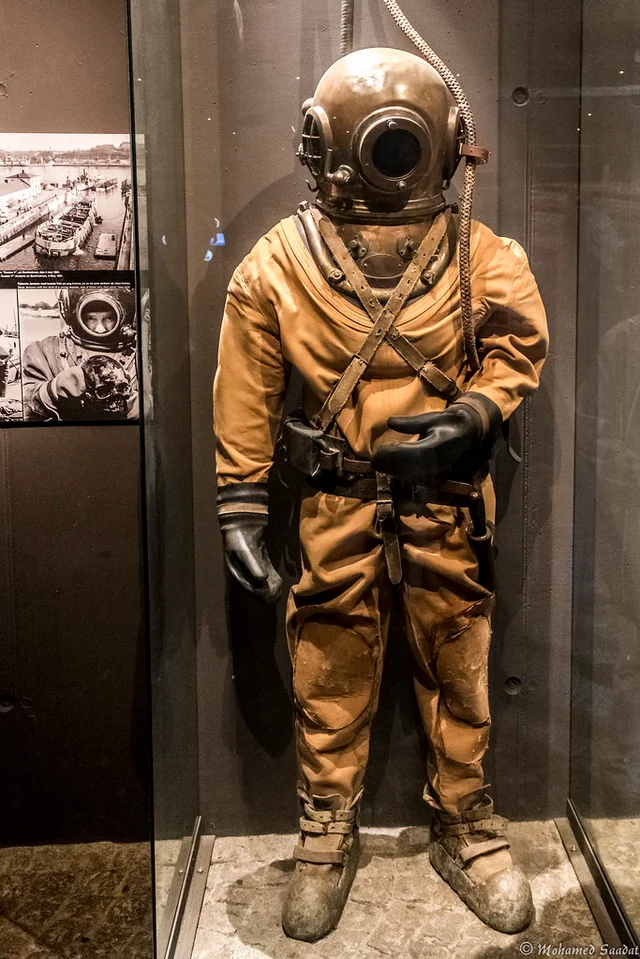
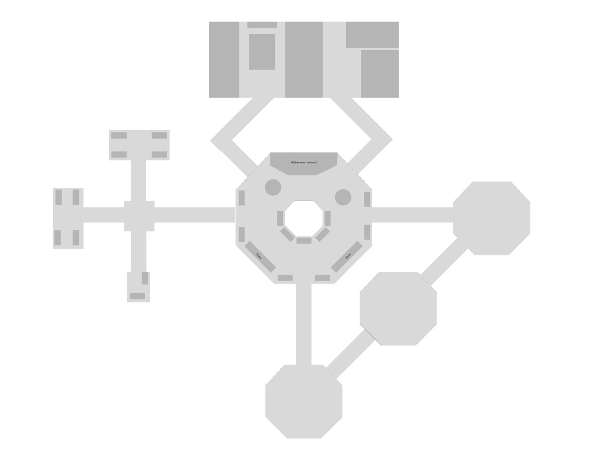
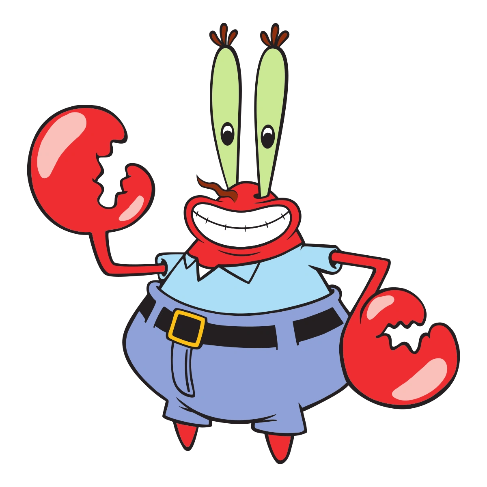
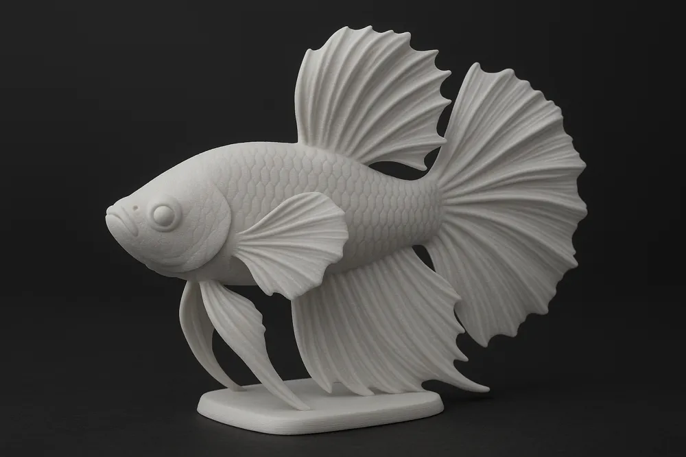

Escaped Lab Monster
Main enemy that stalks the player through the base.
ePortfolio Group 17
A diver investigates a silent underwater base, finds the crew missing, and must repair the submarine before the escaped lab creature catches them five times.
Level design placeholder
Placeholder will be replaced by actual map drawing

Characters

Main enemy that stalks the player through the base.

Planned interaction NPC connected to item or puzzle progression.

Aquarium NPC planned around danger, poisoning, or guarded item interaction.
Puzzle and repair planning
These are current working notes. The final item count can change after the map and puzzles are tested.
Crowbar: opens a loose floor part to access an item.
Keycard or badge: opens main office, lab, or bedroom. Spawn is outside of locked rooms.
Code clue: opens the storage room. The clue can be on paper in the kitchen or main office.
Screwdriver: opens the submarine engine panel.
Movable plant: reveals a card, clue, or item.
2 pts
These are placeholders for now. Replace each slot with screenshots, wireframes, or final mockups as the Unity project becomes playable.
Start, credits, mood-setting intro text, and transition into the base scene.
First-person movement, interact prompt, catch counter, and one-slot inventory.
Replace with the final map picture and room labels once the level layout is finished.
Show how the player collects or uses repair items.
Monster reacts to sound, recalculates path, and catches the player if they fail to escape.
Final submarine escape after repairs, or death screen after five captures.
3 pts
Functional relationships between scenes, characters, items, and enemy behavior. This section will be updated as the Unity scenes become more concrete.
Moves through the base, carries one item at a time, hides, repairs the submarine, and triggers endings.
Escaped lab antagonist. Uses sound and pathfinding to locate, chase, and catch the player.
Defines rooms, corridors, locked routes, hiding locations, and the pathfinding grid.
Unlock rooms, solve small puzzles, and repair submarine parts.
Fish and crab are planned interaction characters. Their exact mechanics can stay flexible until implementation.
Environmental sounds build tension and can reveal player position to the monster.
The enemy system is planned as a grid-based A* pathfinder. The monster should navigate corridors, avoid static obstacles, and recalculate its route when the player moves or creates sound.
3 pts
GameManager coordinates scene state, UI, win/death conditions, and the five-catch rule.
PlayerController uses Interactable objects, stores Items in Inventory, and activates submarine repair steps.
SoundEmitter and MonsterHearing inform EnemyAI, which requests paths from AStarPathfinder and GridNode data.
To be updated later
This section will be filled once implementation starts. Each entry can include the date, what changed, screenshots, and what needs to be decided next.